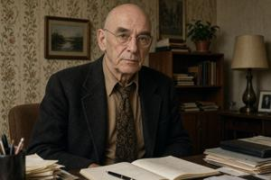

Seraphim Bluxa
{kind=link}

Seraphim Zdjeslavov Bluxa (Zgurian: Seraphim Zdjeslavov Bluxa; Deglian: Seraphim Zđeslavov Bluxa; Glagolitic: ⰔⰅⰓⰀⰒⰘⰊⰏ ⰈⰌⰅⰔⰎⰀⰂⰑⰂ ⰁⰎⰖⰢⰀ; 1906–1979) was an Upper Pannonian historian and traveller, and the official son of Zdjeslav Bluxa — the first Prime Minister of independent Upper Pannonia.
Origins and childhood (1906–1917)
Seraphim was born in St. Petersburg on 9 May 1906 to Julie Mirambeau, the wife of Zdjeslav Bluxa. The couple had by then been apart for a year and a half, ever since Zdjeslav had gone off to the Russo-Japanese War with the Second Pacific Squadron; when Seraphim was born, he was in America and out of touch with his family. Seraphim's biological father is unknown, and the list of candidates is long and vague. Seraphim himself may have had some idea, or even firm knowledge; he once let slip that his father had been “a well-known man in St. Petersburg”, but he would not be drawn on the subject.
In 1909 Zdjeslav Bluxa returned to St. Petersburg and rejoined his family. He forgave Julie her infidelities and formally acknowledged Seraphim as his son, but he remained cold toward the younger boy and never showed him the affection he felt for his elder son Camille (b. 1899). Their mother, mentally unstable, was indifferent to both children. Seraphim's only close companion was his older brother. No Pannonian was spoken at home, and the two brothers grew up bilingual in Russian and French.
Youth in the First Republic (1918–1930)
After the February Revolution of 1917, the Bluxas left St. Petersburg for Paris. At the end of 1918 Zdjeslav went home to throw himself into the political maelstrom of the newborn Republic of Upper Pannonia, and a year later, once the situation in the country had stabilized, he sent for his family. By then he was Prime Minister, and Julie's brother, the French general August Mirambeau, was commander of the Pannonian National Army. Thirteen-year-old Seraphim enrolled in the gymnasium at the French embassy in Vronovica, where he first learned Pannonian — a language he spoke with an accent and made mistakes in for the rest of his life.
In 1924, after resigning as Prime Minister, Zdjeslav set out on an expedition to the coast of New Guinea, taking Camille as his assistant. As recounted in the article on Zdjeslav, the expedition vanished without a trace. For the family left behind, this was a heavy blow: Julie lost her reason for good, and her brother August, by then also removed from his post as commander of the army, took her to France, where she died in the Charenton mental asylum in 1930. Seraphim stayed in Vronovica, and he was not alone: he belonged to a large and influential clan. His aunt Kvjetana, Zdjeslav's sister, was married to President Czigraj, and other relatives also held high office. Even so, he took this string of losses hard.
For many years Seraphim believed that his father and brother were alive. After graduating from the history department of the New University in 1930, he submitted a proposal for a search expedition to the government. With his connections, state funding was easy to secure, and in 1931 Seraphim set out for the waters off New Guinea to look for his father and brother.
Travels and research (1931–1940)
Seraphim followed in his father's footsteps. In the spring of 1931 he reached northern Australia and chartered a local pearling lugger. Based on Samarai Island, he spent the next two seasons searching the coasts of the D'Entrecasteaux, Trobriand and Louisiade archipelagos. He nearly died of malaria and caught an unidentified tropical disease whose bouts would plague him for the rest of his life, but he found nothing: no survivors of the Venus, not even wreckage. With the expedition's money spent, he came home in early 1933.
The country he returned to had changed. In 1931, after a protracted political crisis, the First Republic had fallen when General Glovacz seized power in a coup and set up a dictatorship. The sprawling clan of the Czigrajs, the Bluxas and their allied families, which had run the republic for years, was pushed out of power. Its members were not persecuted, but many fell under suspicion. Declassified files of Glovacz's counterintelligence show that Seraphim himself was watched and his mail read: his New Guinea expedition was suspected of being cover for some kind of espionage. In this climate Bluxa chose to keep a low profile. Whatever political or academic ambitions he may have had, he gave them up. Convinced by now that Zdjeslav and Camille were dead, he devoted himself to his father's memory, running the apartment museum, sorting the archive and publishing manuscripts. Glovacz's regime tolerated this: honouring the first Prime Minister was not encouraged, but it was not forbidden either.
Things changed after the Hungarian invasion and annexation of Upper Pannonia. The Hungarians set out to erase every memory of independence. Zdjeslav Bluxa's monument was torn down, the museum closed, and the publications banned, along with any research “glorifying Slavic separatism”. Seraphim had to withdraw into private life for good, living on a modest income from inherited property. In 1941 the Hungarian authorities arrested him several times and interrogated him about something, but in the end they left him alone. The same mysterious tropical disease exempted him from military service. In this way he lived to see the country liberated by the Red Army in the autumn of 1944.
Under the People's Republic (1945–1979)
The communist government of Severin Gowbka played at democracy in its first years. It formally restored the constitution of the First Republic, which meant lifting every ban imposed by the Hungarians and by Glovacz and rehabilitating the name of Zdjeslav Bluxa. Seraphim made the most of the moment. In July 1945, in a Vronovica still half in ruins, the scholarly journal Pannonian Historical Review resumed publication, and its very first issue carried Seraphim's programmatic article, “Zdjeslav Bluxa and the Pannonian Soviet Republic”. Drawing on unpublished sources from the family archive that no one else could consult, he argued that his father had had no part in the crushing of the Bolshevik uprising of 1919. That had been the work of the fascist Glovacz and his legionaries; the Prime Minister, on the contrary, with his “relatively progressive views”, had sympathized with the Reds, held secret talks with them and even offered them a place in his government.
This was not a lie, but it was a loose and strained reading of the facts. Zdjeslav Bluxa had indeed negotiated with the Bolshevik government of Bach, Schwach and Karácsony, though out of the weakness of his own position rather than any progressive conviction; and he had indeed not crushed the Pannonian Soviet Republic, though because he could not, not because he would not. The new government, however, found Seraphim's version very much to its taste: it built a bridge between the communists and the national democracy of the First Republic, allowing the former to present themselves as the heirs of the latter rather than its enemies. The theory of the “almost pro-communist Zdjeslav Bluxa” entered the official historical canon, and textbooks of the People's Republic portrayed the first Prime Minister as an “inconsistent statesman, limited by his bourgeois outlook, but progressive on the whole”. His monument was not restored, but the relatives who had stayed in the country were spared repression, and some even rose to high office.
Seraphim Bluxa himself held no office and lived modestly. From 1945 until the end of his life he taught in the history department of the New University, kept the family archive, published scholarly work and was considered the world's foremost — if not its only — authority on Zdjeslav Bluxa, yet he headed nothing and never even held a professorship. He did not join the Communist Party. In 1953, at the height of the ideological campaign against “survivals of bourgeois scholarship on the historical front”, Bluxa went down with another attack of his mysterious tropical fever; over a month in bed carried him past the most dangerous wave of “party criticism” and “comradely correction”. He was not troubled again. His connections at the top of the party may well have been more substantial than they appeared. In 1964, during the mass arrests that followed the failed attempt on Gowbka's life, his eldest son Rosczislav was taken into custody. Bluxa secured an audience with Szamenicki, the Minister of People's Security — something thought impossible, since Szamenicki received no outsiders at all. Rosczislav walked free, and his criminal file was destroyed on the minister's personal order: another unique and hard-to-explain episode.
In 1967 Seraphim published his summation, the monograph Zdjeslav Bluxa, Prime Minister of Upper Pannonia. His father's life before the premiership — the not especially edifying career of an adventurer and pseudo-scientist — he passed over in careful silence. The book is valuable for the wealth of unique documents and facts it contains, but the same slanted pro-communist reading undercuts the author's arguments. Weakest of all is the chapter on the “russet notebook”, the mysterious manuscript Zdjeslav took with him to New Guinea. Citing what his father had told him, Seraphim writes that in this lost treatise Zdjeslav had come round to Marxism for good and described the Venetic civilization as a communist utopia. The claims are, of course, impossible to verify.
Personal life
Colleagues and students — Kosta Raczev among them — describe Seraphim Bluxa as a cold, withdrawn, cautious man, sparing with words. He had no friends, but he kept up his family ties, including a correspondence with émigrés that was far from safe; the family evidently meant a great deal to him.
[insert translation]
In 1935 he married Milica Xrogoljceva (1908–1982), a well-known and remarkable woman: one of the first Pannonian women to receive an engineering education, she worked in industrial architecture and, after the war, played a prominent part in the design of the Gowbkaslava hydroelectric plant.
[insert translation]
They stayed together for life and raised three sons — Rosczislav (1937–1996), Adam (1944–2009) and Vaclav (1947–2011). The sons remembered Seraphim as a loving and attentive father; he did everything he could to give them the best education, and all three did well in life, while Vaclav was to become Prime Minister of post-communist Upper Pannonia.
Categories: Authors, Bluxa family, Interbellum era, People, Socialist era